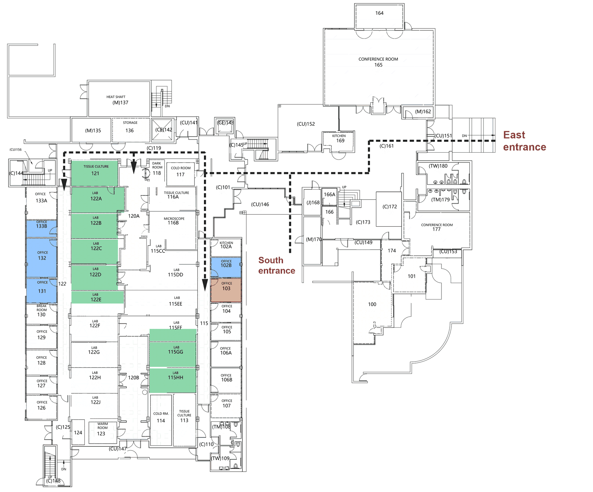
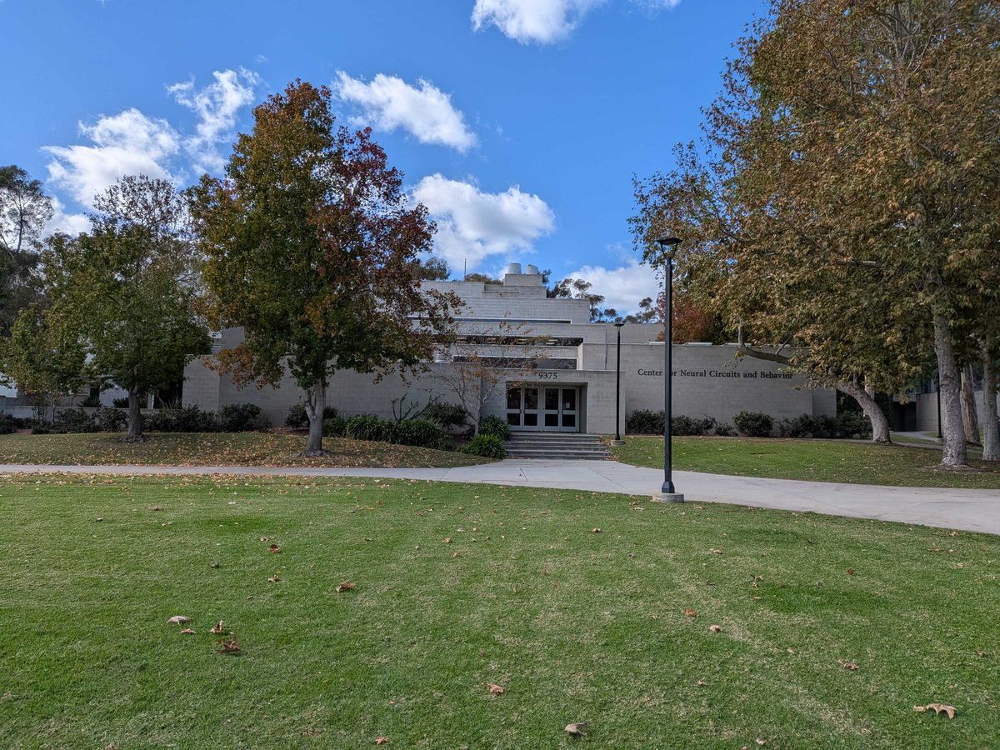
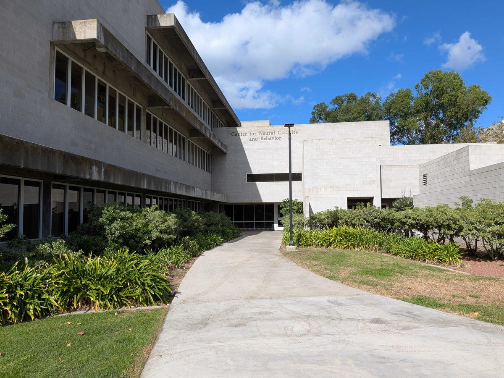

Contact
- Location
- Center for Neural Circuits & Behavior, 1st floor
University of California, San Diego
9375 Gilman Drive
La Jolla, CA 92093 - Phone
- 858-534-8247
- Fax
- 858-534-8590
- Courtney Millican, Administrative Assistant
comillican [at] health.ucsd.edu
How to find us
The building has two entrances. The East entrance faces the lawn: cross the lobby and take the hallway on the left. The South entrance is the single door off the covered walkway, opening onto the same hallway. From there, follow the long corridor: our offices are on the left and our labs on the right. [Draft directions: please check.]



